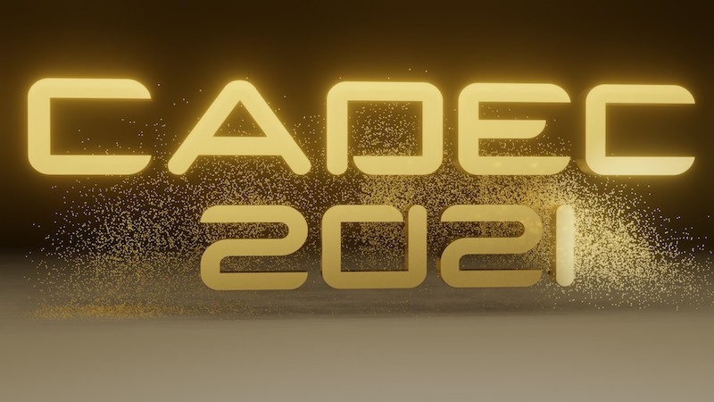

Cadec 2021 - LIVE Online

Ingenting kan stoppa oss - det blir en Cadec även 2021! Denna gång kör vi konferensen LIVE Online och kommer att ha ett fullmatat program med både bredd och djup som vanligt.
Cadec är konferensen för dig som vill ha koll på de senaste trenderna inom arkitektur och utveckling.
Konferensen är kostnadsfri.
Här nedan hittar du inspelade föredrag och presentationsmaterial från konferensen.
Se den kompletta videoinspelningen från Cadec 2021 som inkluderar följande föredrag.

React har sedan ett antal år banat vägen för ett nytt sätt att skapa användargränssnitt. Tidigare var det vanligt att imperativt skapa och hantera tillståndet för olika GUIkomponenter, något som kan leda till problem med komplex kod och att användargränssnittet kommer “ur synk” med modelldata. Med React beskriver man istället användargränssnittet och kopplingen till datamodellen på ett deklarativt sätt. Detta gör att oavsett hur eller i vilken ordning data i modellen ändras så kan man vara säker på att användargränssnittet alltid beter sig korrekt.
Nu har koncepten från React tagit sig vidare till ramverk för native-utveckling på både iOS och Android. I detta föredrag gör vi en genomgång av hur det React-inspirerade Androidramverket Jetpack Compose fungerar och vilka fördelar det ger. Vi visar praktiska exempel på implementation i Kotlin samt belyser hur steget från React till native-utveckling nu minskat väsentligt.

Kotlin coroutines är ett sätt att programmera asynkrona lösningar som ger möjlighet till lättförståelig och effektiv kod.
Vi tittar på vilka möjligheter Kotlin coroutines erbjuder som ett alternativ till andra ramverk för asynkron programmering, exempelvis reactive streams.
Infrastructure-as-code (IaC) är ett begrepp som vuxit fram i takt med övergången från onpremise till molnmiljöer. AWS har sedan 2011 möjliggjort IaC via CloudFormation som ger utvecklare möjlighet att definiera infrastrukturen via templates i YAML eller JSON. Tio år senare finns nu ett nytt verktyg – AWS Cloud Development Kit – som gör utvecklares liv avsevärt lättare.
AWS Cloud Development Kit höjer abstraktionsnivån över CloudFormation och gör det möjligt att skapa AWS-resurser via JavaScript, TypeScript, Python, Java eller .NET. Det finns åtskilliga fördelar med att hantera sin infrastruktur med hjälp av vanliga programmeringsspråk och i detta föredrag presenterar vi några av dem.

GraalVM utlovar snabb uppstart, bättre prestanda, kortare svarstider (latens) och kompakt paketering i form av en fristående binär. Med senaste versionen – 20.3 – ger den intryck av att vara en väl etablerad teknik.
Vi kommer att titta närmare på vad det innebär att bygga en applikation baserad på GraalVM och hur väl de utlovade fördelarna uppfylls. Med en enkel tidstypisk reaktiv mikrotjänst (SpringBoot, REST, Kafka, SQL) som gemensam referens jämförs GraalVM native med motsvarande JVM-paketering och dessutom med en Go-baserad implementation.

Införandet av generics i Go har diskuterats sedan språket såg dagens ljus och nu ser det ut att kunna förverkligas. En implementation kommer troligtvis att ske redan i Go 1.18 och därmed kan denna ofta påtalade brist snart vara ett minne blott.
Varför vill vi ha generics, hur kommer det att fungera i praktiken och hur ser det ut i Go jämfört med andra programmeringsspråk?
Vi tar en titt på det senaste designförslaget för generics i Go, så kallade typade parametrar, och den go2go-playground som visar på implementationen för att få en känsla för vad denna lösning har att erbjuda.

Software-as-a-Service (SaaS) håller snabbt på att bli den dominerande modellen för affärstillämpningar. Fördelarna för kunden ligger i en lägre tröskel och kostnad för att komma igång och att man slipper bekymra sig för IT-infrastruktur, installation och mjukvaruuppdateringar. Tjänsteleverantören kan å sin sida dra nytta av enklare livscykelhantering samt att prenumerationsmodellen ger ett stabilt intäktsflöde.
Men det är långt ifrån trivialt att skapa en arkitektur som ligger till grund för en kostnadseffektiv och skalbar SaaS-lösning. En utmaning är att man vill att olika hyresgäster (tenants) ska dela så mycket som möjligt av mjukvaran och infrastrukturen samtidigt som hyresgästen själv ska få upplevelsen av en logiskt sett privat och unik installation. Vidare är det av stor vikt att data separeras och isoleras, att man ser till att det finns vattentäta skott mellan olika hyresgästers data.
Föredraget går igenom olika arkitekturstilar och mönster som kan användas för att ta fram lösningar där en och samma mjukvaruinstans kan delas mellan olika hyresgäster. Vi ger också exempel hur lösningarna kan implementeras på ett effektivt sätt på Java-plattformen.